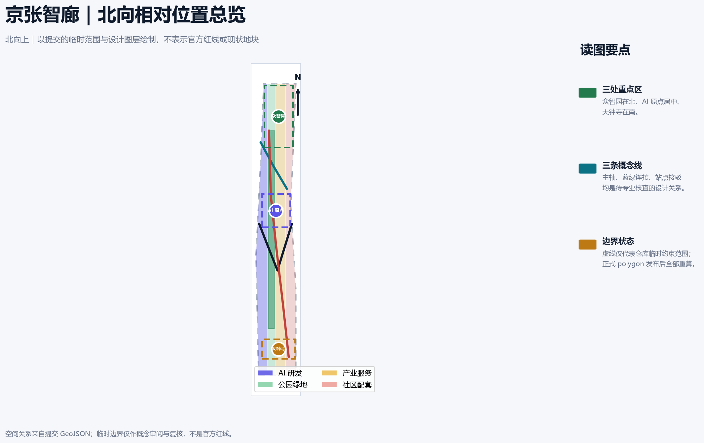
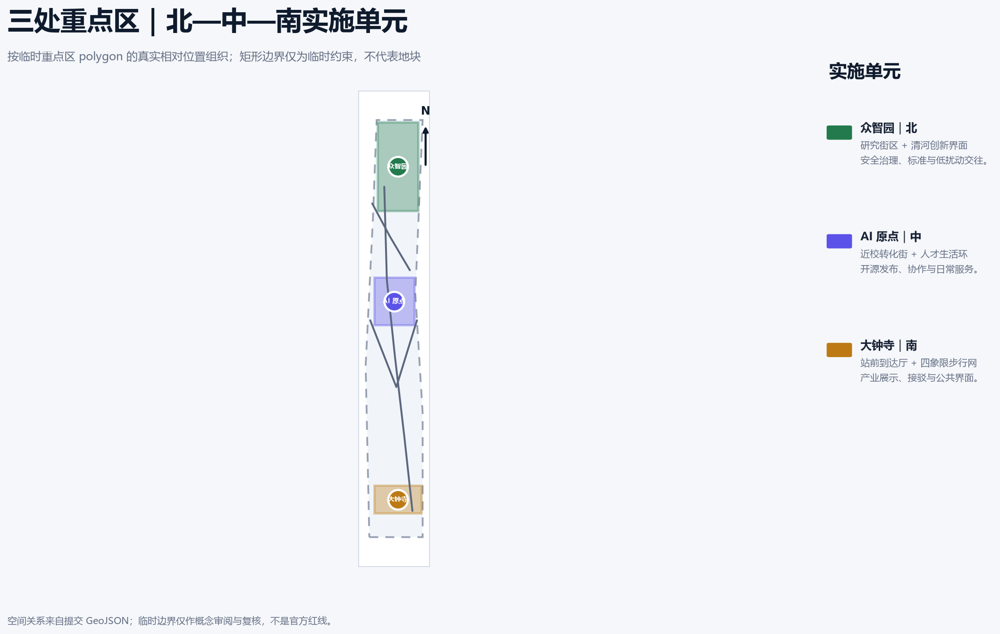
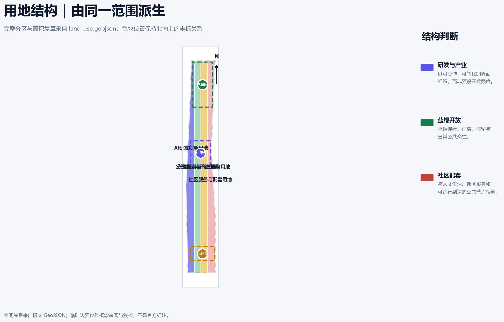
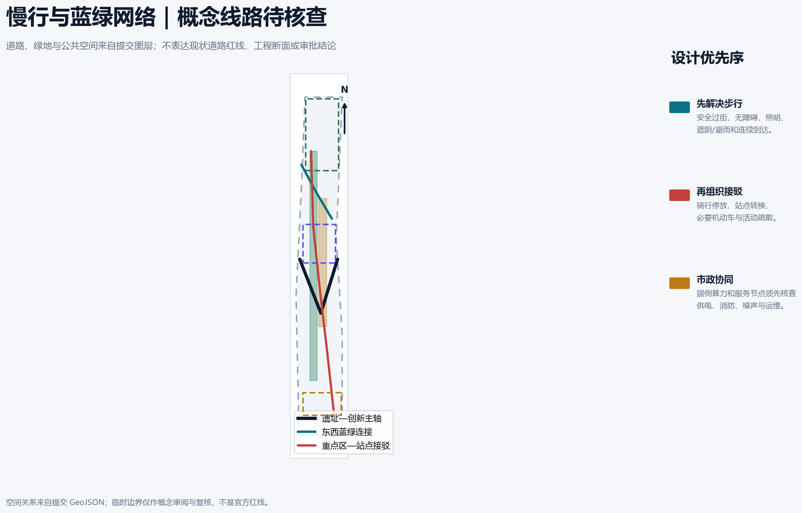
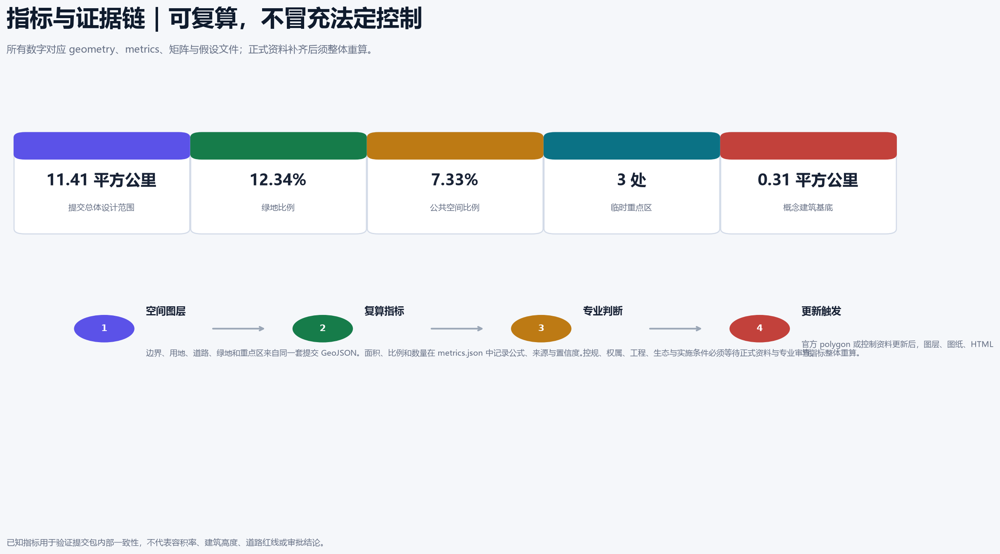

核心指标
用于检查提交图层是否来自同一套空间逻辑，不用于推导法定开发强度。
总览地图与三层范围
统筹研究范围组织产业与未来城市判断；总体设计范围组织更新、用地、交通、市政和风貌；重点区域进入详细设计。下图仅展示总体设计范围内的北向相对位置。

重点区域
众智园在北、北京 AI 原点社区居中、大钟寺在南；这一序列来自提交的临时重点区 GeoJSON。
众智园｜北部
研究街区与清河创新界面：安全治理、标准协作、低扰动交往和蓝绿空间待专业深化。
AI 原点｜中部
近校转化街与人才生活环：开源发布、成果转化、步行缝合和日常服务以可逆措施先行。
大钟寺｜南部
站前到达厅与四象限步行网：产业展示、公共界面和轨道接驳需交通与安全专项核查。

用地分区
研发、产业服务、社区支持和蓝绿开放空间由同一提交范围派生。

交通慢行与蓝绿公共空间
三条线是待现场与专业资料核查的概念关系，不是道路红线。

从图层到专业深化

更新项目、AI 场景与任务覆盖
更新项目覆盖遗址公园慢行断点缝合、清河创新界面、近校成果转化街、大钟寺站步行连通、AI 公共服务节点和全球 AI 活动路线。AI 场景覆盖开源发布、安全治理、端侧算力、慢行导航、产业展示、数据合规、生活服务与公共活动。公告 1.3—1.5 和 agent.1—agent.6 的逐条证据映射保存在任务覆盖矩阵 compliance_matrix.json。